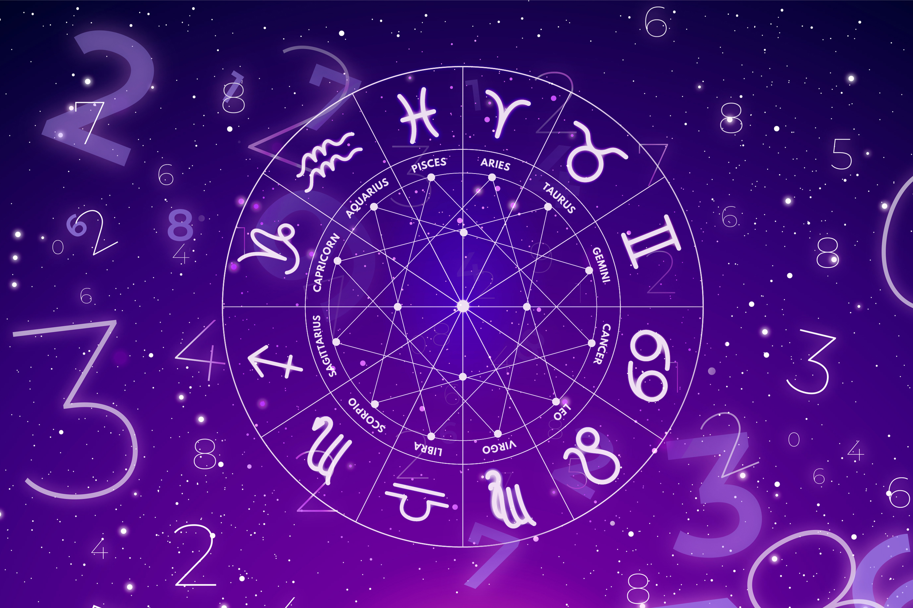

Bienvenidos a tu Astrología
Es momento de hacer tu propio viaje
La astrología es una disciplina seudocientífica que trata de predecir los acontecimientos de la vida humana en base a los astros y su posición en el cielo. Por tanto, la astrología está basada en una serie de creencias que establecen una relación entre los seres humanos y las posiciones de los astros en el firmamento.
La palabra astrología proviene del latín y está compuesta por las palabras ‘compendio’, ‘tratado’, ‘discurso’. Por tanto, etimológicamente, la astrología es «el discurso sobre las estrellas», o dicho de otro modo, el estudio de las estrellas. De igual manera que arqueología significa el estudio de lo antiguo o la geología es el estudio de la tierra.
